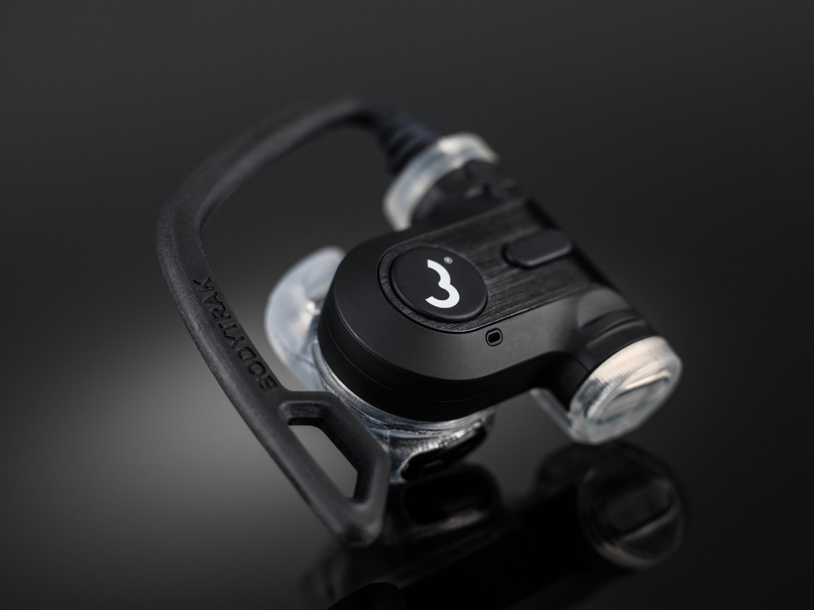

About
About
Photographer, filmmaker and CAA authorised drone operator, based in St Albans and working wherever the job is.
My background
Since getting my first SLR camera at a young age (a Pentax MZ-5N), I have always been passionate about photography. I began studying photography at secondary school, and continued right through to degree level, obtaining a BA (Hons) from Nottingham Trent University.
After graduating in 2001 I assisted several highly regarded advertising photographers in London, gaining invaluable practical and technical experience whilst honing my own eye for creative composition and lighting.
In 2003 I set up my own business and I have never looked back. I have enjoyed photographing a huge variety of subjects over the years, and I have met some truly fascinating and inspiring people.
In 2020 I gained my permission for commercial operations (Pfco) from the Civil Aviation Authority, and I’m really excited about the opportunities that this platform is already bringing to the business, and being able to capture images and video from a new perspective.
I am fortunate enough to be able to combine my passion for photography with my love of travel and the great outdoors. I really enjoy shooting on location and my work has taken me to some great places throughout the UK, as well as the South of France, Norway, Sardinia, The USA, the British Virgin Islands and New Zealand.
How I work, and who with
Most of my work comes through design agencies across Hertfordshire, London and the South East, however I also enjoy working directly with corporate, industrial, and editorial clients right across the UK.
I bring enthusiasm, professionalism, creativity, and vast experience to every shoot, reliably providing my clients with the results that they need (and hopefully a few smiles along the way).
Much of my photography is used in company literature, websites, and marketing material, however my work has also featured in internationally published magazines, and advertising campaigns on 48 sheet billboards.
I shoot with both Hasselblad digital medium format, Professional Nikon DSLR camera systems and DJI drones to deliver the very best image quality and versatility for any shoot.
Services
- 01
Photography
Architecture and interiors, portraits and lifestyle, product and still life: on location or in the studio, shot on Hasselblad medium format and professional Nikon systems.
- 02
Videography
Brand films, product explainers, recruitment films and social cuts, from planning the shoot to delivering the edit.
- 03
Drone
Aerial photography and video from a CAA authorised operator flying DJI drones: sites, estates, developments and landscapes.
- 04
Art direction
Shoots planned with you: the idea, the locations, the people and a shot list that fits the brief and the budget.
- 05
Editing
Retouching and colour for stills; edit, grade and sound for film. Delivered ready for print, web and social.

The studio
A small studio in St Albans
Most of my work is shot on location, but I also have a small studio for product and still life photography: controlled light, quick turnarounds, and somewhere to bring the things that are easier to photograph than to move.
Product photographyKind words
[A short testimonial from a client, in their words: two or three sentences.]
[A short testimonial from a client, in their words: two or three sentences.]
[A short testimonial from a client, in their words: two or three sentences.]